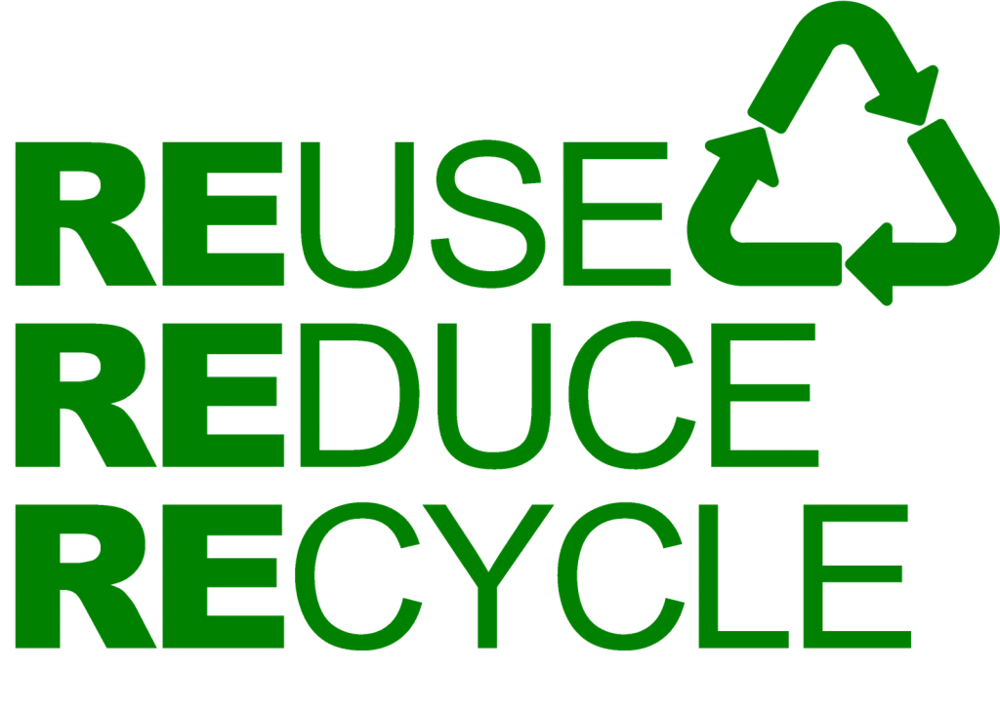
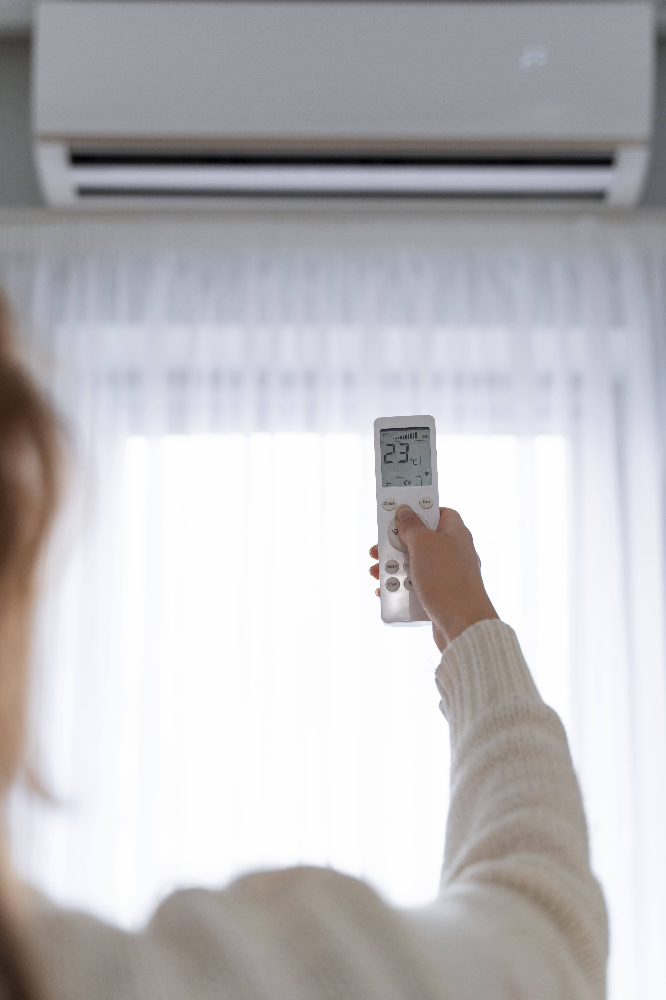

Living in Singapore, we can directly feel the impacts on climate change. For the past few years, global temperatures has been increasing at a rapid rate. Daily temperatures can sore up to 35°C, not mentioning the high humidity in Singapore which makes 35°C feel like 42°C at times. Now, 42°C is definitely not great. Just imagine coming out of the shower to cool yourself down, only sweating a few minutes later due to the weather. That was me for the past few weeks. You would know the feeling well too, right? Living in this city surrounded with concrete buildings, it really feels like we are in an oven and can melt anytime soon. Apart from the heat, extreme weathers such as flash floods are also becoming more common in Singapore. Can you imagine going to school and your socks and shoes all drenched and soaked due to the flood? Because I experienced it before. And it was definitely not a pleasant experience. One moment the scorching Sun is shining its death rays on you, another moment dark clouds just cover the sky and heavy rainfall just starts pouring without much delay. That basically sums up Singapore's tropical weather.
So what are all these extreme conditions caused by? Two words - Climate Change. High greenhouse emissions, high rates of deforestation, sea pollution, air pollution - you name it. Most of human activities all contribute to such factors which cause climate change. Climate change heats the Earth at a way faster rate than normal, causing plenty of the ice in Antartica to melt, causing the sea levels to rise rapidly, flooding low-lying lands such as Singapore, ultimately resulting in death and destruction of infrastructure; Climate change also causes extreme weather conditions such as prolonged droughts, resulting in crops withering, increasing food scarcity, food prices go up, more people die of hunger as a result; The list of possiblities of the effects of climate change are endless. I'm sure we all don't want our next generation to suffer the effects of our irresponsibility, same for ourselves having to live in such horrid waether conditions. We, individuals, communities, governments and the world have delayed for too long already. Our time is running out. Thus, we need to take action NOW.
How To Do Your Part
There are many things we can do as an individual to reverse the effects of climate change. No effort is too small, as although our actions may seem irrelevant and have no impact on anything, together if everyone does their part, our impacts slowly build up and ultimately will make a huge impact on our Earth. It all starts with our daily habits.
One way we can instill healthy habits into our daily lives is adopting the 3R's (Reduce, Reuse and Recycle).
Turn off all electrical appliances when not in use, such as power plugs, lights and fans
Turn on the air-conditioner only when necessary. Set it to 25°C for the best price per wattage to save money and electricity
Opt for more energy efficient electrical appliances with the highest energy rating ticks or with "very good" or "excellent" ratings
Opt for emails instead of letters whenever possible
Turn off the tap when not in use, example while brushing teeth
Avoid taking long showers (up to 15 minutes)
Bring your own reusable containters such as Tupperwares when taking away food
Reuse used plastic bottles as a pot for storing small plants
Water that is used to wash rice can be used to water plants
Bring reusable bags such as tote bags instead of opting for plastic bags
Purchase an eco-friendly bottle made from such as metal instead of buying plastic bottles
Bring your own reusable metal straws or cutlery if necessary
Sort rubbish into categories such as metal/cans, plastic, paper and others for recycling in the blue recycling bins commonly found in HDB void decks
Drop off electronic waste, example old mobile phones to e-waste collection centres
Ensure that plastic bottles or metal cans are throughly cleansed and dried before putting it into the recycling bin
Doante clothes, shoes and bags if in good condition
Fold packet drinks for recycling

3Rs' - Reduce, Reuse, Recycle

A woman setting an air-conditioner to 25 degrees Celcius (Image by Freepik)
My Three Goals For Environment Sustainability
Reducing Energy Consumption
One of my personal goals for environmental sustainability is to make an effort of reducing energy consumption, in specific through the use of one of the 3R's (Reduce). For instance, since I always leave my PC on when not in use, I can make an effort to sleep or even shut down the PC whenever possible so that I can turn off the main power supply for the PC to save electricity usage. The same can be done for my WiFi router before I sleep as I will not be using it for the whole night. Furthermore, since my fridge is old and I'm planning to get a new one, I will try to find some energy-efficient ones with at least 4 ticks.
Cultivating Sustainable Habits In Daily life
Another of my personal goals for environmental sustainability is to cultivate some healthy habits such as adopting the 3R's approach. For example, as I currently do not separate my rubbish into categories for recycling, I can make an effort to sort out my rubbish after cleaning plastic bottles/cans and ensuring that there is no more moisture in it before putting them into a separate plastic bag. I will also fold all packet drinks and send them into the blue recycling bin right below my house for recycling. Apart from that, with all the paper that I have used for my O'Level preparations, I can check if some sides of the papers are not used and if it is clean, I can use them for my rough workings instead of buying more new foolscap paper. Else, I can recycle them instead of just throwing them away.
Supporting Environmental Sustainability Movements
Non-Profit Organisations (NPO), such as World Wildife Fund for Nature (WWF), do have a huge impact on climate change efforts. Thus, I can volunteer my time to help them out in events such as educating the general public on environmental conservation habits to adopt or participate in beach cleanups, for example. Moreover, some apps, such as Ecosia, a website that plants trees for every few searches performed on the browser. Thus, I can switch from Google Chrome to Ecosia and contribute to environmental sustainability efforts without having to put in much effort.